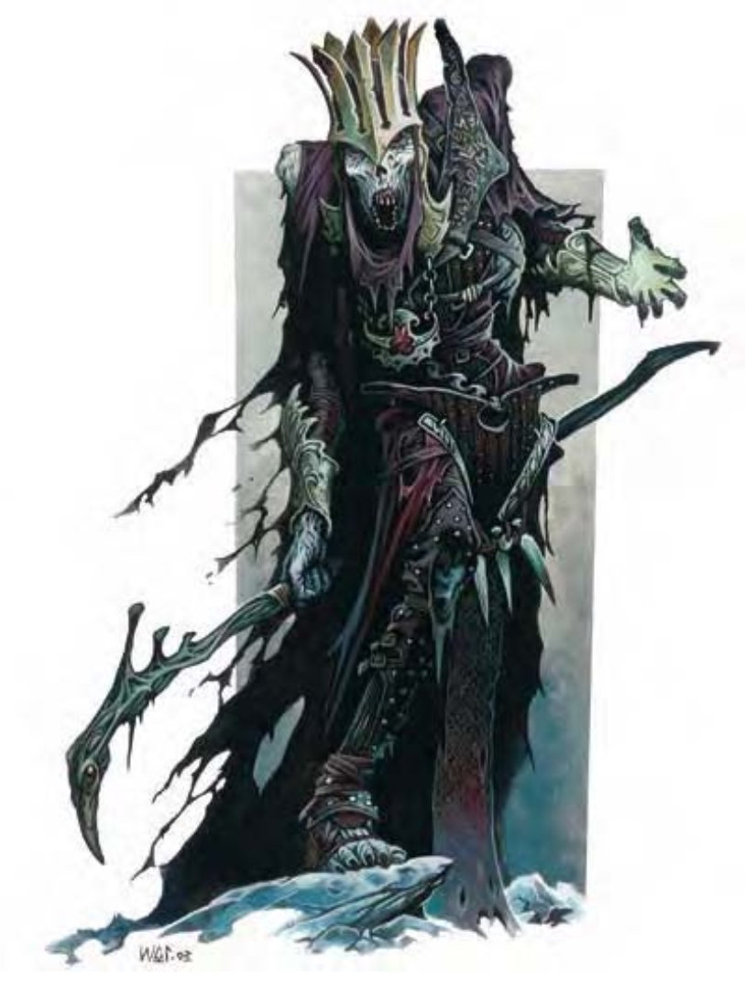

巫妖是不死生物施法者，通常是法师或术士，偶有牧师或其他种类的施法者，他们通过魔法力量不自然地延长其寿命。
一般而言这种生物大多功于心计，也有人认为他们都疯了。他们渴求的是更强大的力量、被遗忘的知识与最可怕的秘法秘密。由于不再被死亡阴影笼罩，巫妖常会策划长达数年、数十年甚至数个世纪才能实现的计划。
巫妖的外貌像是一个枯瘦的人形生物，萎缩的肌肉纠结于外露的白骨上。其眼球早已腐败消失，但空洞的眼窝里却闪着针尖般细小的深红色光芒。即使是最弱的巫妖生前也为大权在握的人，因此他们常穿着堂皇华丽的衣服，兼职战士或牧师的巫妖依旧穿有盔甲。然而正如同巫妖的身体，他们穿着的衣物也大多随着岁月而耗损。腐朽与破败永远伴随着巫妖。
巫妖通晓通用语与所有他们生前会说的语言。
这个骷髅似的生物穿着一件破烂奢华的法袍，他属于某个已经死了很久的强大法师所有。空洞的眼窝里闪耀着憎恨的深红色光芒。
以下列出以11级人类法师为基底生物的巫妖范例：
在计算伤害减免时，巫妖的天生武器视为魔法武器。
对抗巫妖「伤害之触」与「恐惧灵光」的意志检定，以及「麻痹之触」的强韧检定DC皆为16。
一般已准备法师法术 (4/5/5/4/2/1；豁免检定DC=14+法术等级)：零级――「强酸四溅」、「侦测魔法」、「冷冻射线」*、「疲乏之触」；一级――「脚底抹油」、「魔法飞弹」(3)、「衰弱射线」；二级――「镜影术」、「防护箭矢」、「焦灼射线」*、「幽灵手」、「蛛网术」；三级――「解除魔法」、「火球术」*、「加速术」、「闪电束」*、「吸血鬼之触」；四级――「弱能术」、「恐惧术」、「冰风暴」*、「咆哮术」*；五级――「寒冰锥」*、「传送术」；六级――「解离术」。
*由于具有「专攻法术 (塑能)」，这些法术的豁免检定DC=15+法术等级。
持有物：「+4防御护腕」、「+1抗力斗篷」、气化形体药水、「+1防护戒指」、四级召唤怪物术卷轴 (施法者等级8)、魔法飞弹法杖 (50发，施法者等级9)。
| 生命骰 | 11d12+3 (74HP) |
| 先攻 | +3 |
| 速度 | 30英尺 (6格) |
| 防御等级 | 23 (+3敏捷、+5天生、+4「+4防御护腕」+1「+1防护戒指」)、接触14、措手不及20 |
| 基本攻击/擒抱 | +5 / +5 |
| 攻击 | 接触+5近战 (1d8+5负能量附加麻痹)；或木棍+5近战 (1d6)；或匕首+5近战 (1d4/19-20)；或精制轻型十字弓+9远程 (1d8/19-20) |
| 全力攻击 | 接触+5近战 (1d8+5负能量附加麻痹)；或木棍+5近战 (1d6)；或匕首+5近战 (1d4/19-20)；或精制轻型十字弓+9远程 (1d8/19-20) |
| 占据/触及 | 5英尺 / 5英尺 |
| 特殊攻击 | 伤害之触、恐惧灵光、麻痹之触、法术 |
| 特殊能力 | +4驱散抗力、伤害减免15/敲击且魔法、黑暗视觉60英尺、对寒冷、电击、变形、影响心灵效果免疫、不死特性 |
| 豁免 | 强韧+4、反射+7、意志+10 (「抗力斗篷+1」) |
| 属性 | 力量10、敏捷16、体质―、智力19、感知14、魅力13 |
| 技能 | 专注+15、解读文书+14、躲藏+15、神秘知识+18、聆听+12、潜行+16、搜索+16、察言观色+10、法术辨识+20、侦察+12 |
| 专长 | 战斗施法、制造奇物、法术瞬发、抄录卷轴、法术默发、专攻法术 (塑能)、法术定发、健壮 |
| 环境 | 温带平原 |
| 组织 | 单独 |
| 宝藏 | 标准钱币、双倍宝物、双倍物品 |
| 阵营 | 中立邪恶 |
| 进化 | 视人物职业而定 |
| 等级修正值 | +4 |
「巫妖」是一种后天模板，只要能制造出命匣 (关于命匣请参见下文) 即可套用在任何人形生物上，被套用的生物称为基底生物。其他种族也有巫妖，如龙，但使用不同模板。
除了此处所列说明之外，巫妖所有数据和特殊能力都比照基底生物。
体型及种类：生物种类变为不死生物 (强力人形生物或强力人形怪物)。基本攻击加值、豁免检定或技能点数都不需要重新计算。体型也不变。
生命骰：将现有与将来的HD改为d12。
防御等级：巫妖可用+5或基底生物的天生防御加值，使用较高者。
攻击：巫妖每轮可进行一次接触攻击。若基底生物可使用武器，巫妖也保有该能力。拥有天生武器的基底生物也保有天生武器。未持武器的巫妖将以接触或其主要天生武器 (如果有的话) 进行攻击，持有武器的巫妖可使用接触攻击或武器攻击。
全力攻击：未持武器的巫妖会使用接触 (见上文) 或天生武器 (如果有的话) 攻击。若持有武器则会用武器作主要攻击，如果还有空手，将以接触进行额外的次要天生武器攻击。
伤害：没有天生武器的巫妖，对活物进行接触攻击可造成1d8+5点负能量伤害。通过意志检定 (DC=10+巫妖生命骰的一半+巫妖魅力调整值) 则伤害减半。拥有天生武器的巫妖则可随意使用接触或天生武器攻击，若选择后者，每次攻击可额外造成1d8+5点伤害。
特殊攻击：巫妖保有基底生物原本的所有特殊攻击，另外还会获得下列特殊攻击：
除非特别注明，否则豁免检定DC=DC=10+巫妖生命骰的一半+巫妖魅力调整值。
恐惧灵光 (超自然)：巫妖全身笼罩着死亡与邪恶的可怕灵光。半径60英尺内看到巫妖，且生命骰小于5的生物皆需做意志检定，失败则受到「恐惧术」影响，法术效果等于由一个等级与巫妖相同的术士所施放。通过检定的人物在24小时内不会再被同一个巫妖的灵光影响。
麻痹之触 (超自然)：被巫妖以近战接触攻击击中的生物必须做强韧检定，失败则永久麻痹。「移除麻痹」或任何能移除诅咒的法术皆可释放受害者 (见《玩家手册》第212页有关「咒骂」的描述)。此效果无法以解除魔法解除。被巫妖麻痹者看起来像是已经死亡，但通过「侦察」检定 (DC=20) 或「医疗」检定 (DC=15) 都可以发现该生物还活着。
法术：巫妖能施展其生前能施展的所有法术。
特殊能力：巫妖保有基底生物原本的所有特殊能力，另外还会获得下列特殊能力：
驱散抗力 (特异)：巫妖拥有+4驱散抗力。
伤害减免 (超自然)：巫妖强健的不死之身赋予他「伤害减免15/敲击且魔法」能力。在计算伤害减免时，其天生武器视为魔法武器。
免疫 (特异)：巫妖对寒冷、电击、变形 (但他们能对自己施展变形效果) 及影响心灵的攻击免疫。
属性：将基底生物属性做如下增修：智力+2、感知+2、魅力+2。身为不死生物的巫妖没有体质属性。
技能：巫妖在进行「躲藏」、「聆听」、「潜行」、「搜索」、「察言观色」与「侦察」检定时具有+8种族加值。其余与基底生物相同。
组织：单独或部队 (1个巫妖，加上2-4个吸血鬼与5-8个吸血衍体)。
挑战级数：同基底生物再+2。
宝藏：标准钱币、双倍宝物、双倍物品。
阵营：任何邪恶阵营。
进化：视人物职业而定。
等级修正值：基底生物的等级修正值+4。
制作储存生命力的命匣乃是成为巫妖的必经过程。一般而言消灭巫妖的唯一方式便是毁掉其命匣。若未找到并销毁命匣，巫妖会在被杀后的1d10天内再度出现。
每个巫妖都必须亲自制作其命匣，需有「制造奇物」专长才能做。该人物必须会施法，且施法者等级在11以上。制作命匣需花费120000金币与4800经验值，命匣的施法者等级与其创造者当时的施法者等级相同。
最常见的命匣形态为密封的金属小盒，内有一条写有魔法字句的羊皮纸。命匣为超小型，生命值40点，硬度20，破坏DC=40。也有其他形态的命匣，如戒指、护符或类似的物品。